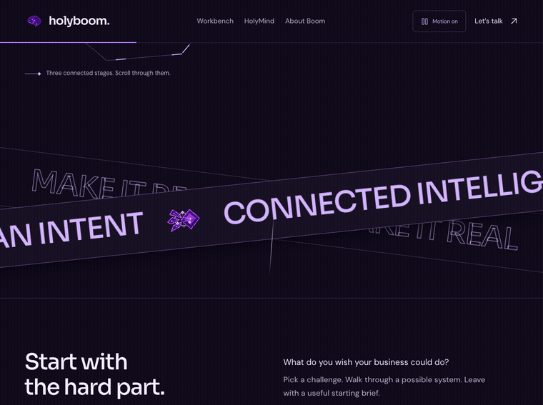
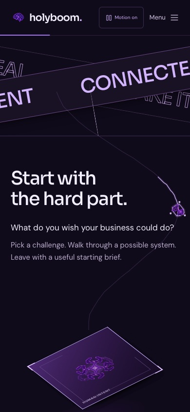
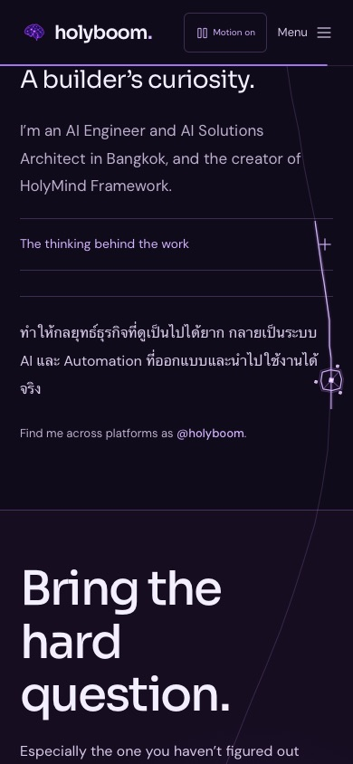

One idea.
Carried forward. And back.
Continuous Mind v6 connects the approved showcase scenes. The original brain and crystallizer are visually transferred between their original positions. A single faceted thread then carries the idea through the rest of the page.
Recorded from the published website using scripted scrolling in both directions. This is a browser capture, not a rendered concept or image animation.
The same crystal, passed between scenes.

Verified on the live release
| Check | Result |
|---|---|
| Chromium continuity suite | 43 passed |
| WebKit continuity suite | 43 passed |
| Forward / reverse bridges | 10 tested in each engine |
| Runtime errors / failing checks | 0 / 0 |
| Responsive widths | 320, 390, 680, 768, 1024, 1440 |
| Previous showcase regression (local) | 55 passed |
| Original brain and skill image files | 36 byte-identical originals |
Also checked: pause restoring original images, no additional idle render loop, expanded gallery and disclosure layout, pointer transparency, skill selector and dialog, reduced motion, no JavaScript and direct anchor navigation. WebKit testing is not a physical iPhone test.


Chromium results · WebKit results · Live asset hashes
Implementation: e4e8da9. No external motion service, new runtime library, analytics or AI execution.